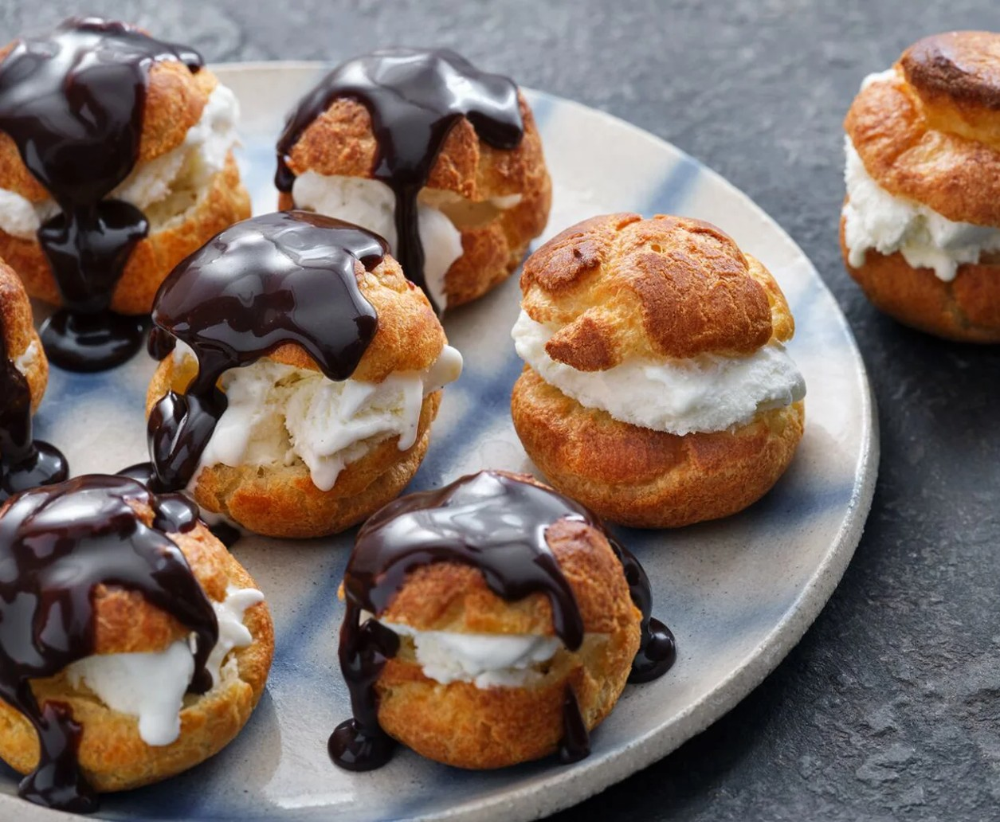

Home
Profiteroles

Description
Experience the elegance of French sweets with our profiteroles recipe.
Crisp pastry shells meet creamy vanilla ice cream, all finished with a glossy drizzle of chocolate sauce.
These little puffs look absolutely astonishing yet are so easy to prepare,
making them a brilliant treat for special occasions and quiet weekend afternoons alike.
Ingredients
Choux pastry
- Water 125 ml
- Arla Cravendale Semi Skimmed Milk 125 ml
- Butter 125 g
- Icing sugar ½ tbsp
- Salt ¼ tbsp
- Flour 120 g
- Eggs 4
Chocolate sauce
- Butter 25 g
- Double cream 100 ml
- Icing sugar 25 g
- Cocoa 2 tbsp
- Syrup 1 tbsp
- Salt ¼ tsp
Filling
Steps
Choux pastry
- Set the oven to 200 °C or 180 °C (fan-assisted).
- Bring water, milk, butter, sugar, and salt to a boil in a heavy-bottomed saucepan.
- Reduce the heat, sift in flour, and stir vigorously with a wooden spoon.
Cook for 1–2 minutes, stirring continuously, until the batter dries out and pulls away from the sides of the pan.
- Remove from heat and let cool for 1–2 minutes.
- Add eggs one at a time, beating with an electric mixer after each addition.
Continue beating until the dough is smooth and glossy.
- Transfer the dough into a piping bag with a round tip.
- Pipe about 25 small balls onto a baking sheet lined with parchment paper. Gently flatten the top with a damp finger.
- Bake in the middle of the oven for about 25 minutes or until nicely browned.
Do not open the oven door during baking, as this will cause the profiteroles to collapse. When they are done, let them cool.
Chocolate sauce
- Melt butter in a saucepan, then add cream, sugar, cocoa, syrup, and salt. Cook over medium heat,
stirring continuously, for about 5 minutes.
- Slice the profiteroles in half, fill them with cream, and drizzle with the chocolate sauce.